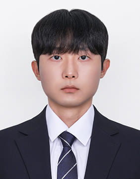

I received my M.S. from Konkuk University (Deep Computer Vision Lab, advised by Prof. Wonjun Kim). My research focuses on Novel View Synthesis — particularly sparse-view 3D rendering using Neural Radiance Fields (NeRF) and 3D Gaussian Splatting — as well as Human Mesh Reconstruction and Generative Models.
